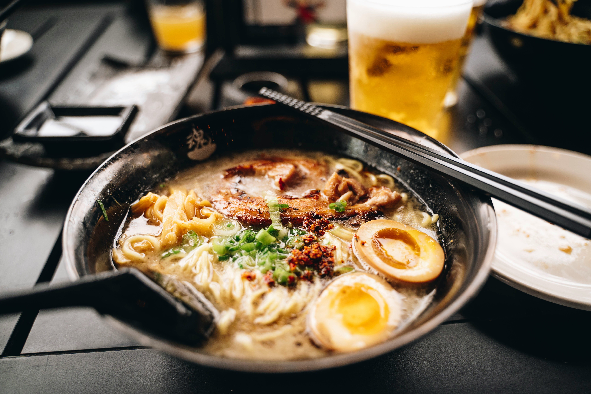

Ramen

Description
This recipe for vegan Curry Ramen is my current favorite bowl of soup. It
takes only a few minutes to prepare and it’s also mostly pantry
ingredients with a few fresh ingredients thrown in so it’s pretty
inexpensive. Plus, it’s a great way to get extra veggies into your diet
while also enjoying delicious comfort food.
Ingredients
- 2 packages ramen
- 1 tbsp sesame oil
- 8 ounces baby bella mushrooms, sliced
- 3 cloves garlic, minced
- 1 tsp grated fresh ginger
- 2 tbsp red curry paste
- 1 tbsp peanut butter
- 1 tbsp low-sodium soy sauce
- 3 cups vegetable broth
- 2 cups broccoli, cut into florets
- 1 cup full fat coconut milk
- pepper to taste
-
optional: Green onions, cilantro, limes, toasted sesame seeds, sriracha
Steps
-
Cook ramen according to package instructions, omitting the seasoning
packet. Drain and divide into 2 serving bowls.
-
In a separate pot, heat sesame oil over medium heat. Add mushrooms and
cook, stirring frequently, until softened.
-
Add garlic, ginger, and curry paste. Cook, stirring the entire time,
until fragrant, only 30 seconds or so.
-
Add peanut butter, soy sauce, and vegetable broth. Bring to a boil.
- Add broccoli; cook until broccoli is tender, 4 - 5 minutes.
- Stir in coconut milk.
- Season to taste with salt and pepper.
- Ladle broth and vegetables over the cooked ramen noodles.
-
Garnish with green onions, cilantro, limes, sesame seeds, and sriracha,
if desired.